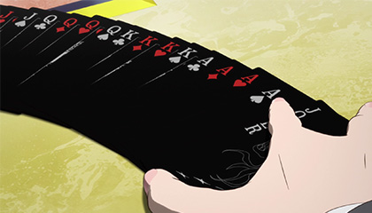
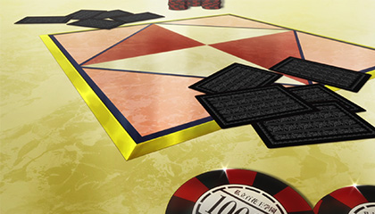
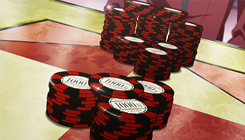
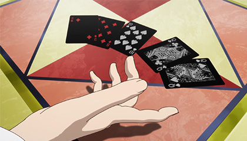
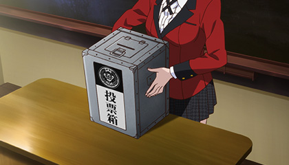
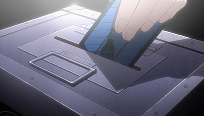
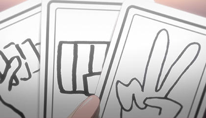
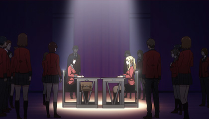
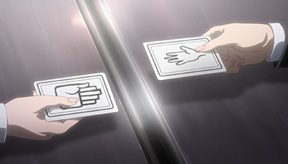

基本的なルールはクローズドポーカー(日本における一般的なポーカー)と同じ。
5枚の手札を各自一度きりチェンジし、役の優劣を競う。使用するデッキはJOKER１枚入りの53枚1組。 JOKERは常に最強の役を構成するワイルドカードとして扱う。
 しかし、このポーカーには「フォールド（ゲームから降りる）」も「コール（同じ金額を賭ける）」もない。 プレイヤーにできるのは「ベッド（賭ける）」と「レイズ（上乗せして賭ける）」のみ。 しかもその賭け枚数に上限はなし。
より高い金を積んだ者には役の強い順（Stronger）か弱い順（Weaker）かを「選択（チョイス）」する権利が与えられる。
通常のポーカーなら当然役の強弱通り、勝敗が決定するが このゲームでは「チョイス」の権利を得た者が、「強い役が勝つ」か「弱い役が勝つ」か選ぶことができる。
「強い順」なら通常のポーカーと同じく、より強い役を作った者の勝利。 一方「弱い順」なら役の優劣が真逆になり、より弱い役を作った者の勝利となる。 つまり、金さえ積めばブタでも最強の役にできる。
ゲームの当事者以外の、クラスメイトの30人にグー・チョキ・パーのいずれかをカードに記入してもらう。
2参加者全員が記入し終わったら、ゲームの当事者に見えないように一つの箱に入れていく。（投票）
 3ゲームの当事者は、箱の中から3枚ずつカードを引き、自分の手札とする。
 4手札の中から1枚だけ選び、ジャンケンをする。あいこの場合は、残りの2枚から選んで再度ジャンケン。3回ともあいこなら引き分け。
普通のジャンケンとちがって、手札による制限があり、グー・チョキ・パー全部を出せるとは限らない。自分の手札から類推するその不平等な読み合いが面白い。